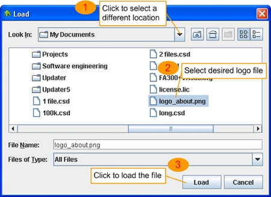

通过 CAA，可为当前打开的记录文件预览和打印一份包含公司信息、注释、图表以及统计数据的报表。也可选择只打印主图表。
如需打印全报表，则应在“Basic Information 对话框”中输入公司的基本信息，该信息将出现在打印/导出报表的封面页上。单击工具栏上的基本设置按钮（ ）或选择菜单项“Setting -> Basic
Setting（设置 -> 基本设置）”，可打开“Basic Information 对话框”。通过这一对话框，可输入公司名称、地址、电话等。
）或选择菜单项“Setting -> Basic
Setting（设置 -> 基本设置）”，可打开“Basic Information 对话框”。通过这一对话框，可输入公司名称、地址、电话等。

Basic information 对话框
如需设置公司标志，请单击“Select Logo File”按钮，然后在“Load 对话框”中选择一个标志文件。这一标志将出现在打印报表每个页面的右上角。

单击“OK”按钮，所有输入的信息将被保存，并在下次程序启动时加载。
可选择在报表中添加一个注释页，注释页通常包括有关报表的摘要或分析。注释页将出现在打印/导出报表的第二页。如需添加一个注释页，请选择菜单项“Tool -> Write Comment Page（工具 -> 编写注释页）”打开“Comment Page 对话框”，然后输入标题和内容。单击“OK”按钮，所输入的注释将被保存，并在下次程序启动时加载。如需从报表中删除注释页，只需单击该对话框中的“Clear Comment”按钮。

Comment page 对话框
为了正确预览和打印报表，必须正确选择“Page Setup 对话框”中的页面打印选项。选择菜单项“File -> Page Setup（文件 -> 页面设置）”或单击“Print Preview 对话框”中的“Page Setup”按钮，可打开“Print Preview 对话框”。

页面设置对话框（显示默认的页面打印选项）
这一对话框显示用于打印此图表的打印机的默认/用户定义的页面打印选项。此处，可选择需要使用的纸张大小（确保打印机上装载的纸张与此处所指定的相同）及页边距。如需更改打印报表的打印机，请单击“ Printer...”按钮，然后从下拉列表中选择另一台打印机。单击“OK”按钮，此处所选择的选项将被保存，并在下次程序启动时加载。
注：在这一对话框中，无法更改报表各页面的方向。图表页面总是横向打印，其它页面则纵向打印。
可单击工具栏上的打印预览按钮（ ）或选择菜单项“File -> Print Preview（文件 -> 打印预览），在“Print Preview 对话框”中预览报表。

Print preview 对话框
通过这一对话框，可在屏幕上预览报表的打印情况。此外，该对话框也会显示用于打印报表的打印机的名称。如需查看报表的另一页，请单击“Next”或“Previous”按钮。在这一对话框中，可进行下列操作：
Select page printing options（选择页面打印选项）：单击“Page Setup”按钮。
Print the standard report（打印标准报表）：从“View”下拉列表选择“Standard report（标准报表）”（或“Full report（全报表）”），然后单击“Print”按钮。此时将出现“Print 对话框”，单击“OK”按钮可打印报表。请注意，如在此处更改了打印机，程序将提示再次选择页面打印选项。这是为了确保所选择的打印机支持所有页面打印选项。标准报表由 3 到 4 个页面组成，显示内容包括公司信息、注释（如有）、主图表以及主统计数据。

Print 对话框
Print the detailed report（打印详细报表）：从“View”下拉列表选择“Detailed report（标准报表）”，然后单击“Print”按钮。此时将出现如上所示的同一“Print 对话框”。只有在当前打开的记录文件的产生时间超过 1 天时，才能选择这一选项。详细报表包含标准报表的所有页面，另外还包括每一天的图表和统计数据。
Print the main graph only（只打印主图表）：从“View”下拉列表选择“Graph only（仅图表）”，然后单击“Print”按钮。此时将出现如上所示的同一“Print 对话框”，但无法选择打印范围。通过这一选项，可打印图表区中当前显示的图表。
注：
如所选用于打印报表的打印机所装的纸张与“Page Setup 对话框”中指定的不同，报表的打印可能会不正确。
首次运行新版本的程序时，如无法找到页面打印选项文件，或计算机的默认打印机已被更改，则在显示“Print Preview 对话框”前，程序会提示在“Page Setup 对话框”中选择页面打印选项。这是为了确保报表的显示和打印均正确。
可单击“Print 对话框”中的“Properties”按钮更改打印机的打印选项，如打印质量。但不应在此处更改页面打印选项（纸张大小和方向）。页面打印选项只能从“Page Setup 对话框”中获得，在别处进行更改对于打印输出无任何作用。
图表打印在白纸上，因此，在“Select Channel 对话框”中应避免选择白色作为曲线的颜色。
如需获得更好的图表打印效果，应使用彩色打印机。